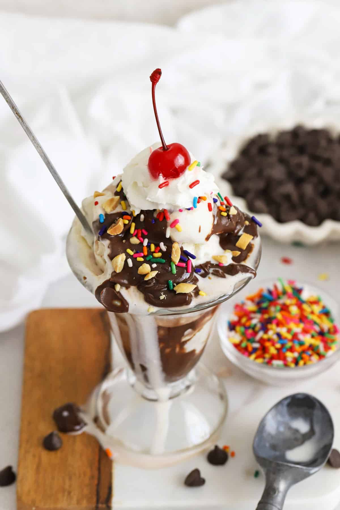

My Personal Web Page
Hi!
This is Illinois M. Atienza
BTLED-ICT 3-2
This is my personal web page using basic HTML and CSS. In this web page I am going to show you a little bit of myself and one of my favorite artist.
My Favorite Artist
Taylor Alison Swift is an American singer-songwriter. Known for her autobiographical songwriting, artistic reinventions, and cultural impact, Swift is a leading figure in popular music and the subject of widespread media coverage.

Favorite Songs
- Blank Space
- Long Live
- All Too Well
My Favorite Food
- Pasta
- Adobo
- Ice Cream 